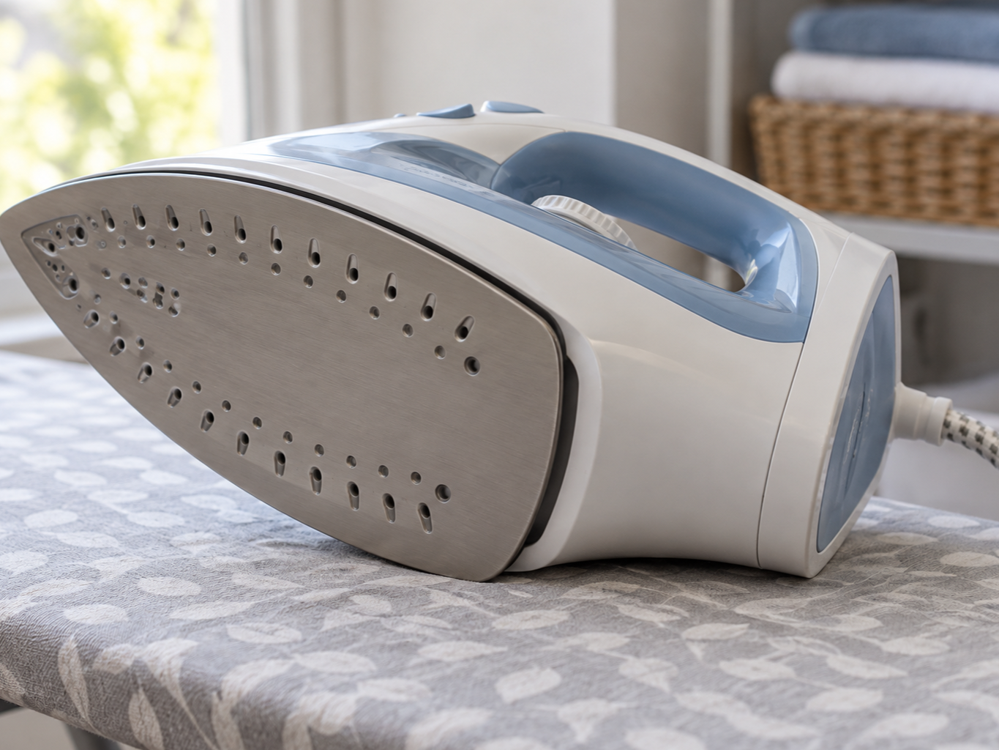
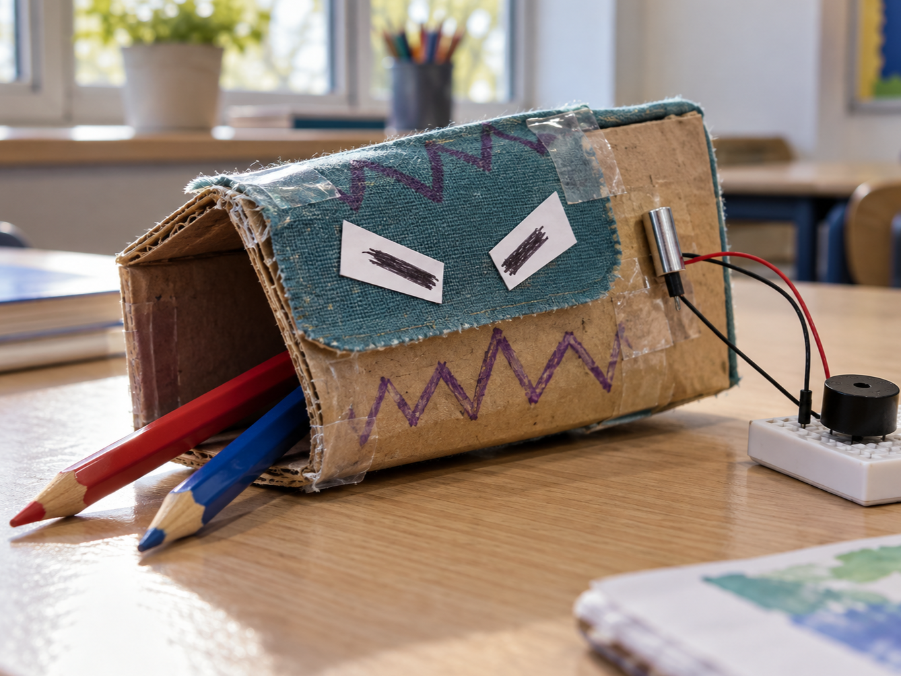

Iron safety shut-off
DetectIron tips sideways
DecideHas the delay elapsed?
DoSwitch the heater off
A tilt switch changes state when it tips past a particular angle.
While it stands upright, a tiny metal ball rests on two contacts and completes the circuit. Tip it over and the ball rolls away, breaking the circuit.
It can detect that an object has been picked up, tipped over or opened.


from gpiozero import Button
tilt = Button(2)
tilted = not tilt.is_pressed